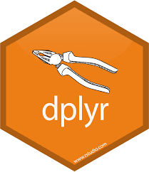

R ile Veri Düzenleme
| Konu I: dplyr paket tanıtımı |  |
| Konu II: Veriyi üst düzeyde toplama |  |
| Konu III: Seçme ve Dönüşturme | |
| Konu IV: Veri Setlerini Birleştirme | |
| Konu V: Veri Formatı Degiştirme |
Veri Setleri
Türkiye Uluslararası Eğitim Verisi (tuev) geniş kapsamlı uluslararası başarı değerlendirme programlarından PISA ve TIMSS Türkiye verilerini depolayan bir R kütüphanesidir.
Bu eğitimde
- PISA 2018 (OECD, 2019)
- TIMSS 2019 (Mullis, Martin, Foy, Kelly, &
Fishbein; 2020)
veri setleri kullanılacaktır.
- PISA 2018 (OECD, 2019)
PISA 2018 Bu verilerin toplandığı anketler
TIMSS 2019 Grade4 Bu verilerin toplandığı anketler
TIMSS 2019 Grade8 Bu verilerin toplandığı anketler